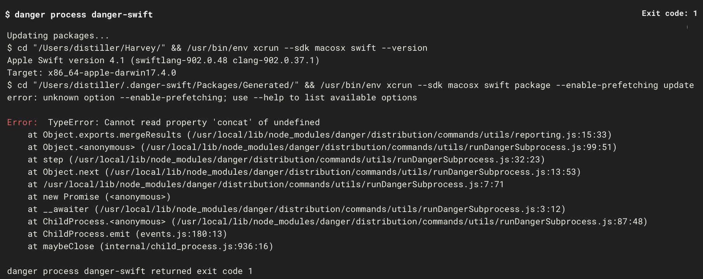
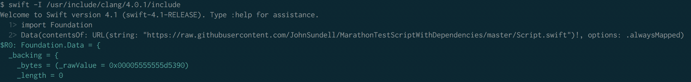
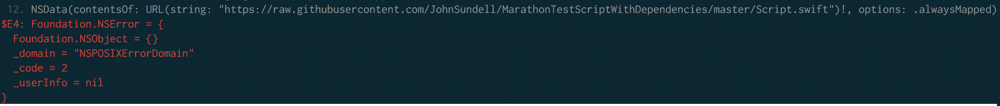
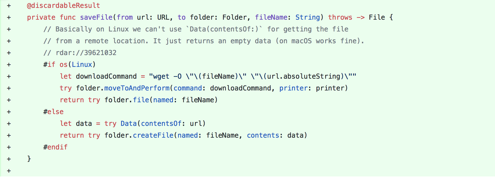

Open Source Adventures #2 - Marathon
Apr 23, 2018 18:00 · 7 minute read
(This is a continuation of #1 - Xiblint. You don’t necessarily need to read the first part, but you’ll get the general context for this one, so if you have some spare minutes I encourage you to read it first ;-)
When I finished all the necessary work for Danger JS, I could finally start working on the DangerXiblint plugin. And this lovely weekend started off great with my feature being merged to the official Xiblint repo. I immediately started implementing some parts of the plugin and wanted to test it on my CIContinous Integration… And then I noticed that Danger Swift is not quite there yet on Xcode 9.3…
Let’s fix Danger Swift first, I thought!
Danger Swift
I was trying to think about a possible cause of the problem and the first thing that popped in my mind was Danger JS <-> Danger Swift compatibility, as we made a lot of big releases lately. The other option could be a breaking change that happened in Swift 4.1, although it shouldn’t be the case as it was a minor release. Whatever it was, it seemed like a quick fix.
First, I’ve made a PRPull Request on Harvey to see what errors do we got on our CI:

This meant that the command that we use to build underlying packages was using an option that was removed from the newest Swift. And after a research, indeed, that was the case:
As it turned out, the flag --enable-prefetching was already a default behaviour and it was redundant, thus removed.
Now I needed to find where did we use this flag in Danger Swift. I couldn’t find it in a project or the whole workspace… And all of a sudden things got interesting. I needed to go deeper.
I remembered that Danger Swift uses Marathon for resolving underlying packages and configuration file. After a quick search, the flag was indeed in Marathon’s sources. This meant working on completely new environment and I couldn’t be more excited about it!
Marathon
Marathon is an abstraction layer over Swift Package Manager. It’s quite popular as it makes scripting in Swift pretty easy. And as it’s popular, I knew that someone had to encounter the same problem I had so I searched through issues and PRs first. And of course John was already working on the PR:
It seemed like the PR is almost complete: only two tests were failing and people were saying that it works on their machines. I cloned the repo and ran the test - it seemed to work on my machine as well. Unfortunately, tests on CI were still broken, days were passing by, and people couldn’t use both Marathon and Danger Swift on the newest Xcode. In that case, many owners could say that the “CI is broken” and merge it under the pressure of the community. But John did an excellent job and didn’t merge it until the fix was there. I wanted to help and move things forward, so I started digging.
The CI was running on Linux, so I knew where to start. I’ve installed Swift 4.1 toolchain on my Ubuntu server using SwiftEnv, and followed the instructions on how to build & run the tests on Linux. Readme of Marathon is fantastic and it got me up and running quickly.
I ran the tests on my server and (un)fortunately they failed - we were on the right track. Now I had an environment where I reproduced the case each time and had a quick feedback loop on it (where on CI it would take ages to fix).
Finding the problem
One of the dependencies of Marathon, Releases, had two warnings that could possibly be the reason of failure. I fixed both of these and created the PR:
Unfortunately, even after the fix, the tests were failing.
Debugging on Linux
Debugging a Swift script on remote Linux machine is similar to debugging JavaScript - prints everywhere. When I was debugging and running the tests, I noticed that they take too much time. I started reading the documentation (swift test --help) in search of a better solution. It turned out that swift test has an option to run only the tests that match the given regex - excellent!
swift test --filter "testInstallingRemoteScriptWithDependenciesUsingRegularGithubURL"
Now I could have even quicker feedback loop on the changes I’ve made.
Finding the real problem
A few checks later I found out that there is a difference between manually cloning the repo and installing the script vs installing the script by using an URL - the former did work, and the latter didn’t 😅
This way I isolated my test case to just one function. A few moments later I found out that somehow Linux version of Foundation framework didn’t want to fetch the data from the remote location, where the same function on macOS worked fine.
Now I could isolate the problem to one line of code and try to play with it in a Swift REPL - an environment similar to the LLDB debugger in Xcode.
Swift REPL
To enter the REPL on Linux you just run the command swift and you’re basically ready to go. Oh, unless you want to import a framework like Foundation, then you’ll probably see few errors:
Some smart people on the internet said that this looks like a problem with linker. They even had a solution for Linux Mint - almost similar to mine, but I had to find correct include path for Ubuntu 😅
swift -I /usr/include/clang/4.0.1/include
This way I could finally import Foundation in REPL and test fetching data from the remote:

As you can see the data length is 0, which means that there was some problem along the way. Normally it should throw an error to let me know about it, but it didn’t, so right now we have an error, but we are not sure what error this is. Fortunately, there is this “old” NSData API that I could use to check the error instead:

Uh… This was almost as useful to me as data.length = 0. Internet also didn’t know much about it. But then I remembered that this part of Foundation should be open-sourced already, so I started looking for an answer there. I found a function that could be responsible for the error, but didn’t have energy left to research the underlying problem. For now, I stopped as I’m not even sure if it’s possible to fix with what we have available to us on GitHub. But if you’re feeling brave enough to try, please let me know!
The hotfix
The hotfix for this problem was to use a terminal command instead of a Foundation function to save the file. The final decision was to use wget as it’s widely popular and available:
If you are interested in the full PR, this is the one.
A second fix
Quickly after the PR was merged, Peter Steinberger noticed that the fix is non-obvious and in the long term, it might be hard to remember why we did this. This is a very good point, and I’m sad that I didn’t think about it while making the PR. But still, I could make the improvement PR and “file a radar”Report a bug to Apple.
Radars are great and I filled a few of them in the past already. The problem with them is that they are not open by default. To make your radars public, you can use OpenRadar. I didn’t used it before, but now I wanted to add a comment with the radar ID so in the future people can check the status of this problem. For filling radars I use Brisk, and if you didn’t use it yet, I encourage you to do so!
Then, I finished the PR with the fix and a comment: with both the description of the solution and the radar in it:

Oh, and after the merge I also updated Danger Swift and did my first release - it felt incredible:
Hopefully, now I can settle down on finishing DangerXiblint… ;-)